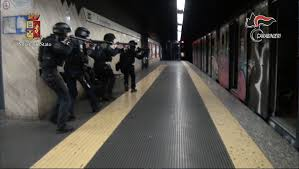
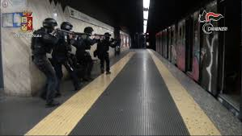

Roma, 22 maggio 2023 - Esercitazioni di sicurezza a sorpresa preoccupano i Romani. Un'operazione congiunta senza precedenti tra polizia, militari e carabinieri ha avuto luogo nelle prime ore di oggi, lasciando i cittadini di Roma in uno stato di confusione e preoccupazione. L'esercitazione, ha visto la chiusura dei principali punti di flusso e deflusso della città, un'azione che molti temono possa essere l'antipasto di misure più severe in futuro. Il labaro, la massima, la chiavichetta, il Peur e Tor Sapienza sono stati i codici utilizzati per coordinare l'operazione, che è stata tenuta segreta fino all'alba, quando le manovre sono diventate evidenti ai residenti. Questa scelta di non preavvisare la comunità ha sollevato questioni etiche e pratiche, con molti che si chiedono se non sarebbe stato più saggio informare il pubblico per evitare il rischio di incidenti. Le autorità hanno difeso la decisione di mantenere il silenzio, sostenendo che l'elemento sorpresa era cruciale per testare la reattività delle forze dell'ordine in caso di una vera emergenza. Tuttavia, questo ha poco fatto per placare le preoccupazioni dei cittadini, che ora si interrogano sulla natura "dell'emergenza abbastanza grave"che potrebbe giustificare una simile "blindatura"della capitale italiana. Mentre i dettagli dell'esercitazione rimangono avvolti nel mistero, la popolazione di Roma rimane in attesa di risposte, sperando che la trasparenza prevalga nel dialogo futuro tra lo stato e la cittadinanza.
 
